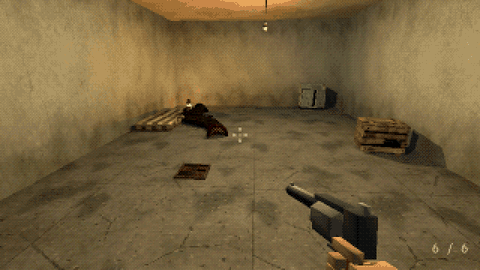

Tutorials › Make a Monster That Latches onto the Player
How to Make a Monster That Latches onto the Player in Godot 4
A monster that glides at you, rears, lunges, latches onto your chest and bites until quick hits knock it off.

One script that hunts, rears, lunges, holds on and lets go, with any mesh: the monster glides along the floor at its target, rears its front up when it is near, lunges, latches onto the target's chest and bites on time until quick hits knock it off; knocked off, it falls, lies still a moment and comes again.
Script: latching_monster.gd (MIT) · Godot 4.3 or newer · its folder on GitHub
How to use it
- Add a
Node3D, attachlatching_monster.gdand put your monster's mesh under it (its front -Z, its pivot at its tail end, so rearing tips its front up). - Set
targetto your player: itstake_damage(amount, from)takes the bites. - Your weapons call
hit(amount)on it: damage adds up while the hits come quickly, and enough of it while it holds on knocks it off. - Tune the distances it changes its mind at (where it rears, where it lunges), the height it holds on at and how hard it is to shake off.
What it needs
- Godot 4.3 or newer (the Compatibility renderer is enough).
- A target with
take_damage(amount, from).
Try it free
The Cordatix PSX Horror Free Sampler has a small swarm of PSX Horror Swarms' worms, not The Latching: the code works on any mesh of yours.
How it was tested
In Godot 4.3 and 4.7.2 with a stand-in target: it glides at its target and rears at the rear distance, its mesh tipped up; it lunges and latches onto the chest; it bites on time; it holds on as its target walks and turns; slow hits do not knock it off and three quick ones do; it falls to the floor, lies still, and comes again.
The code
extends Node3D
## How to Make a Monster That Latches onto the Player in Godot 4
## Cordatix Godot 4 PSX tutorials, MIT licensed: https://github.com/GoldenSparrow-Dev/cordatix-godot-psx-tutorials
## The devlog: https://cordatix.itch.io/cordatix-psx-horror-swarms/devlog/1774519/how-to-make-a-monster-that-latches-onto-the-player-in-godot-4-psx-horror-swarms
## A monster that latches onto the player, for Godot 4.3+: it glides along the floor at its target, rears its front
## up when it is near, lunges, latches onto the target's chest and bites until it is shot off; knocked off, it lies
## still a moment and comes again. Put your monster's mesh under this node (its front -Z, its pivot at its tail end:
## rearing tips its front up). Set target to your player; its take_damage(amount, from) takes the bites, and your
## weapons call hit(amount) on this node.
signal latched(target: Node3D)
signal released
@export var target: Node3D
@export var glide_speed := 2.6 ## along the floor, metres a second
@export var rear_distance := 3.0 ## this near (along the floor), it rears its front up
@export var lunge_distance := 1.7 ## this near, reared, it lunges and latches on
@export var latch_height := 1.1 ## where it holds on, metres above the target's feet: a chest
@export var latch_depth := 0.25 ## in front of the target's middle, so it sits on the chest, not in it
@export var bite_every := 0.8
@export var bite_damage := 7.0
@export var shake_off := 60.0 ## this much damage...
@export var shake_window := 1.5 ## ...each hit less than this many seconds after the last, knocks it off
@export var rest_after := 2.0 ## knocked off, it lies this long before it comes again
var state := "hunt" ## hunt, rear, lunge, latched, off
var rear := 0.0 ## 0 lying flat, 1 reared
var _t := 0.0
var _damage := 0.0
var _since_hit := 0.0
var _from := Vector3.ZERO
var _vel := Vector3.ZERO
var _floor_y := 0.0
func _ready() -> void:
_floor_y = global_position.y
func _physics_process(dt: float) -> void:
if target == null:
return
_since_hit += dt
if _since_hit > shake_window:
_damage = 0.0
var to := target.global_position - global_position
to.y = 0.0
var d := to.length()
match state:
"hunt": # glide at it; near enough, rear
rear = move_toward(rear, 0.0, dt * 3.0)
_face(to, dt)
if d > lunge_distance:
global_position += to / d * minf(glide_speed * dt, d - lunge_distance)
if d <= rear_distance:
state = "rear"
"rear": # rear up, edge in slowly; reared and near, lunge
rear = move_toward(rear, 1.0, dt / 0.45)
_face(to, dt)
if d > rear_distance + 0.8:
state = "hunt"
elif rear >= 1.0 and d <= lunge_distance + 0.05:
state = "lunge"
_t = 0.0
_from = global_position
elif d > lunge_distance:
global_position += to / d * minf(glide_speed * 0.4 * dt, d - lunge_distance)
"lunge": # a quarter of a second through the air onto the chest
_t = minf(_t + dt / 0.28, 1.0)
global_position = _from.lerp(_chest(), smoothstep(0.0, 1.0, _t))
if _t >= 1.0:
state = "latched"
_t = 0.15
latched.emit(target)
"latched": # held on: it goes where the chest goes, and bites
global_position = _chest()
_face(target.global_basis.z, dt) # its front to the target's middle
_t -= dt
if _t <= 0.0:
_t = bite_every
if target.has_method("take_damage"):
target.call("take_damage", bite_damage, self)
"off": # thrown off: it falls, lies still, then hunts again
_vel.y -= 9.8 * dt
global_position += _vel * dt
if global_position.y <= _floor_y:
global_position.y = _floor_y
_vel = Vector3.ZERO
rear = move_toward(rear, 0.0, dt * 3.0)
_t -= dt
if _t <= 0.0 and _vel == Vector3.ZERO:
state = "hunt"
for c in get_children(): # its front tipped up as it rears
if c is Node3D:
(c as Node3D).rotation.x = rear * deg_to_rad(55.0)
## A blow: damage that comes quickly enough adds up, and enough of it knocks the monster off.
func hit(amount: float, _at := Vector3.ZERO) -> void:
_damage += amount
_since_hit = 0.0
if state == "latched" and _damage >= shake_off:
state = "off"
_damage = 0.0
_t = rest_after
var back := global_position - target.global_position
back.y = 0.0
_vel = back.normalized() * 2.5 + Vector3.UP * 1.5
released.emit()
func _chest() -> Vector3:
var front := -target.global_basis.z
front.y = 0.0
return target.global_position + Vector3(0, latch_height, 0) + front.normalized() * latch_depth
## Turn so its front (-Z) looks along `to` across the floor.
func _face(to: Vector3, dt: float) -> void:
if Vector2(to.x, to.z).length() < 0.01:
return
rotation.y = lerp_angle(rotation.y, atan2(-to.x, -to.z), minf(1.0, dt * 6.0))
The devlog and the pack
The step-by-step walkthrough is the devlog How to Make a Monster That Latches onto the Player in Godot 4 (PSX Horror Swarms 2.0) on itch.io, written for PSX Horror Swarms, a PS1-style asset pack by Cordatix for Godot 4, Unity, Unreal and Blender.